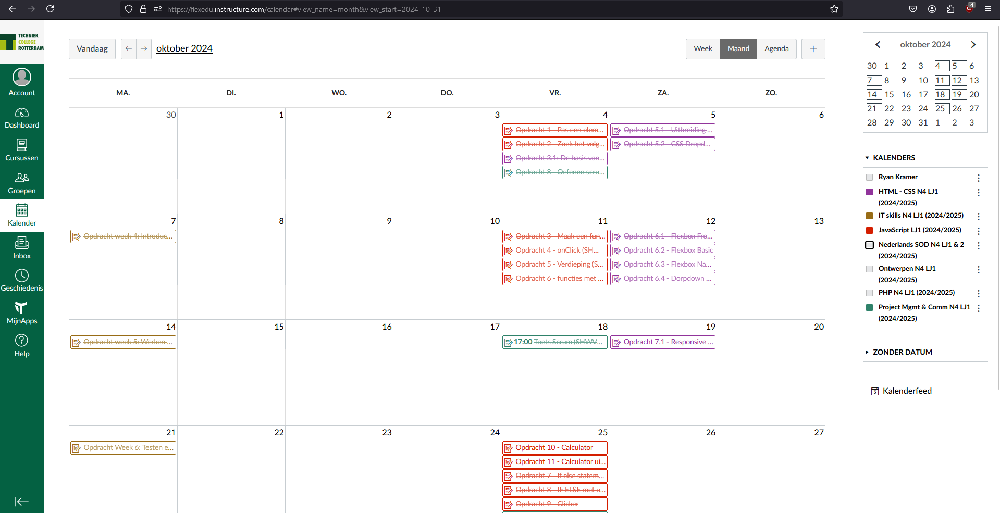
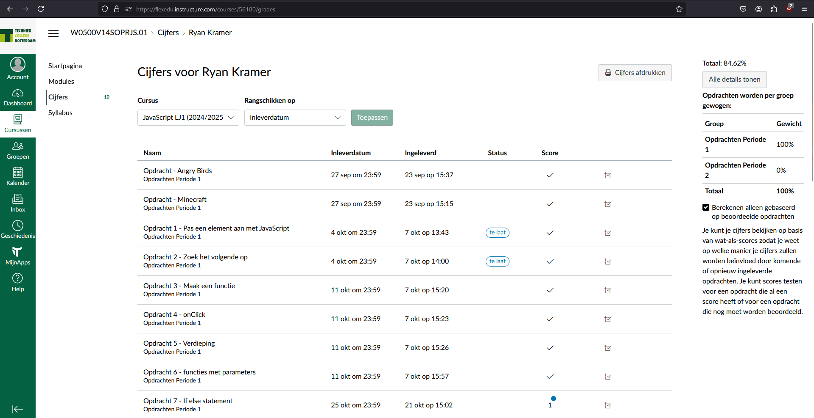
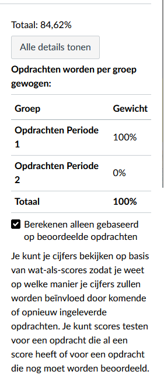

Wat is Canvas?
Canvas is een online leerplatform dat onze school gebruikt om het onderwijs te ondersteunen. Het biedt studenten de mogelijkheid om hun opdrachten, voortgang en lesmateriaal op één plek te bekijken.
Dashboard
Wanneer je inlogt op Canvas, zie je het dashboard. Dit dashboard bestaat uit verschillende tegels die elk belangrijke informatie bevatten:
Voortgang: Hier zie je de status van opdrachten: of ze ingeleverd zijn, of er iets mist, of ze beoordeeld zijn, en of er feedback is gegeven.
Opdrachten: Een overzicht van alle aankomende en openstaande opdrachten.
Inleveren: In deze tegel kun je opdrachten inleveren.
Theorie: Toegang tot studiemateriaal en extra bronnen.

Kalender
De kalenderfunctie in Canvas is een handige tool om alle opdrachten en deadlines te volgen. Je kunt zien wanneer opdrachten inleveren en belangrijke data aanstaande zijn. Dit helpt studenten en ouders om goed voorbereid te zijn.
Vooruitgang
In de tegel "Voortgang" kun je eenvoudig de status van de opdrachten volgen. Hier zie je of de opdrachten zijn ingeleverd, of er iets ontbreekt, en wat de feedback van de docent is. Dit is een uitstekende manier om betrokken te blijven bij de studievoortgang van jouw kind.
 SOD Installaties en de Canvas Parent App
In de tegel voor SOD Installaties vind je instructies voor het gebruik van de Canvas Parent App. Deze app stelt ouders in staat om de voortgang van hun kinderen in de gaten te houden en hen te ondersteunen waar nodig. Hoe te starten met de Canvas Parent App:
. Download de app uit de app store of Google Play.
. Log in met de gegevens die je van school hebt ontvangen.
. Volg de instructies om jouw kind aan de app toe te voegen.